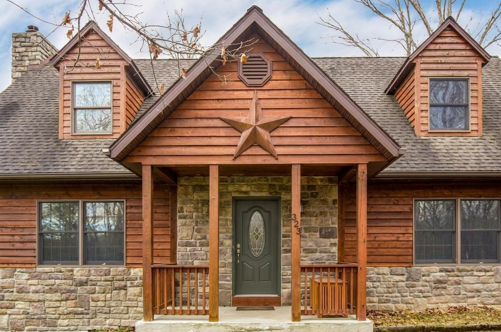
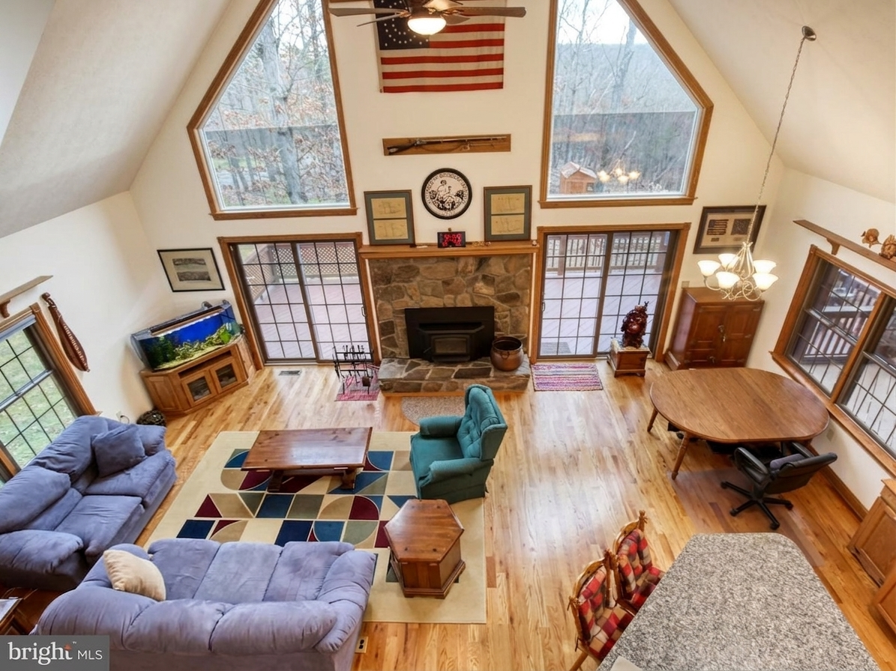
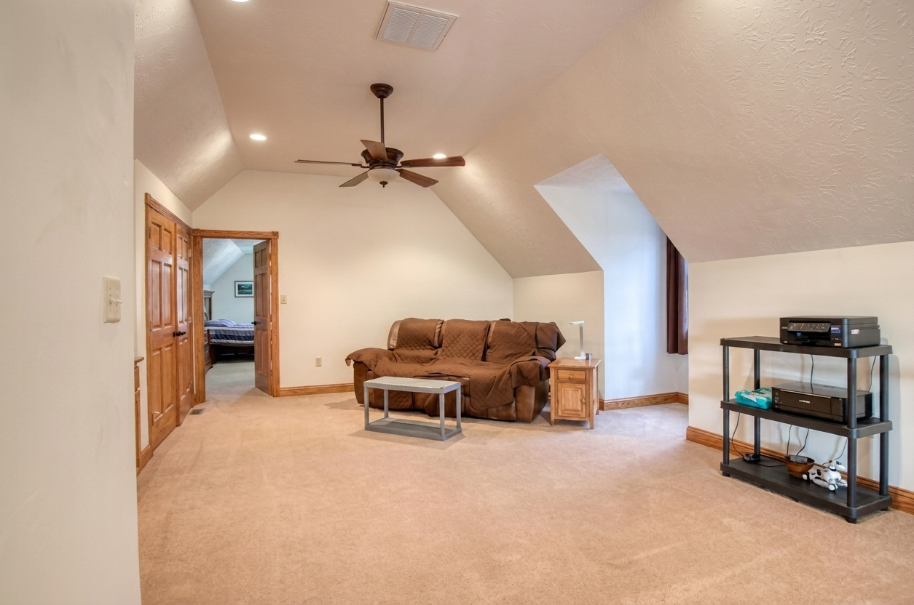
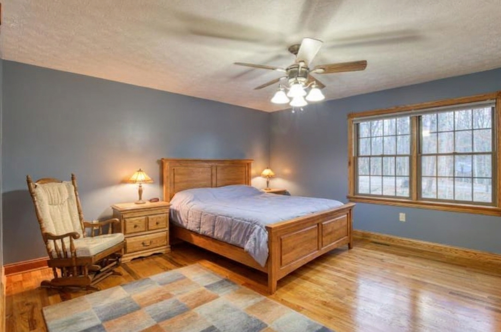
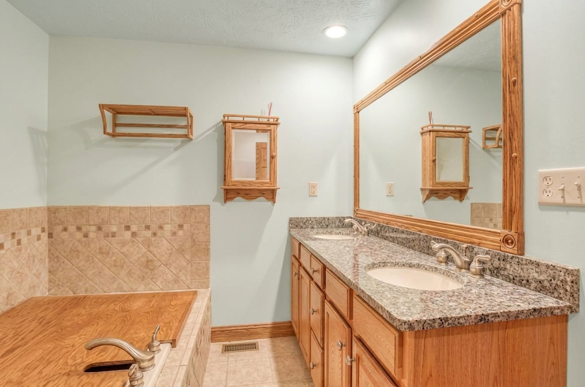
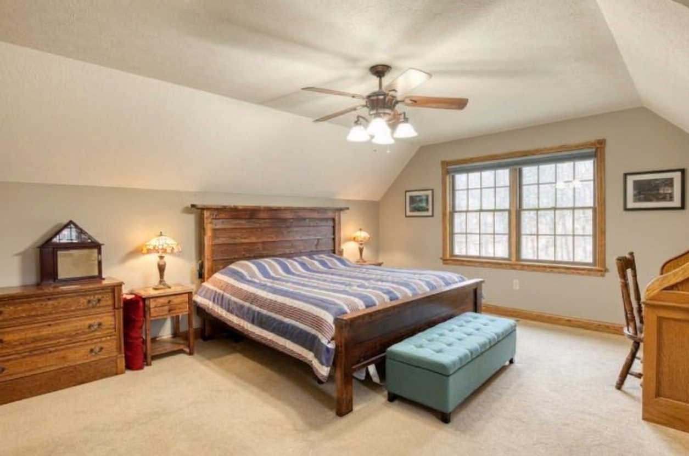
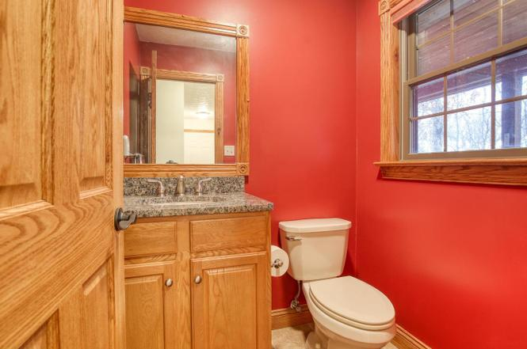

The white
Sample Alabaster on the great-room gable and a north-facing wall. If it reads yellow in morning light, BM White Dove is the fallback. Test before ordering 11 gallons.
Planning record · Colours not shown as completed work
The complete colour scheme for 323 Colonial, inside and out. Decisions recorded 1 September 2026; quantities are for planning and pricing.

Understory greens outside the windows, quilt blues from the region’s textile tradition and the house’s fieldstone chimney set the palette. One warm white carries the connected great room and loft; rooms beyond receive muted blue, sea-glass and stone tones.
Cedar siding, railings, wood trim, wood ceilings and fieldstone remain. The half bath remains as-is. Planned changes below are visualised separately.
Confirmed room and exterior assignments.
AlabasterSW 7008 · great room, loft, kitchen, halls
Van Courtland BlueBM HC-145 · main bedroom
Sea SaltSW 6204 · main bath
Revere PewterBM HC-172 · bedroom 2, upstairs bath
Pewter GreenSW 6208 · entry and garage doors
Walnut solid stainChip TBD · deck and porch floors
Every image in this section is an AI-edited planned-work visualisation, not current condition.
 Planned-work visualisation
Planned-work visualisation
Planned-work visualisation Planned-work visualisation
Planned-work visualisation Planned-work visualisation
Planned-work visualisationPlanned paint relationships shown over prior-listing photographs.

Planned-work visualisation Planned-work visualisation
Planned-work visualisation
Planned-work visualisation
Planned-work visualisation
Planned-work visualisation
Planned-work visualisation Planned-work visualisation
Planned-work visualisation
Current conditionBudgeting estimates; painter’s measurement governs.
Sale scope, 2 Sep 2026. Interior whites stay as they are for sale. Work is limited to kitchen, two bathrooms, entry and garage doors, and deck and porch floors. Full-scheme quantities remain for later use.
Areas use A-4/A-5 rough plans scaled from a sketch—not field measurements—with ceiling heights inferred from photographs, standard deductions, two coats, 350 sf per gallon for paint and 300 sf for solid stain.
| Colour | Where | Area | Computed | Buy |
|---|---|---|---|---|
| SW Alabaster | Great room, loft, kitchen, dining, halls, stairs | ≈ 1,780 sf | 10.2 gal | 11 gal |
| BM Van Courtland Blue | Main bedroom | ≈ 375 sf | 2.1 gal | 2 gal + 1 qt |
| SW Sea Salt | Main bath | ≈ 165 sf | 0.9 gal | 1 gal |
| BM Revere Pewter | Bedroom 2, walk-in, upstairs bath | ≈ 1,015 sf | 5.8 gal | 6 gal |
| SW Pewter Green enamel | Front, side and porch doors | — | — | 1 gal |
| Walnut solid deck stain | Porch and side-deck floors | ≈ 810 sf | 5.4 gal | 6 gal |
| Multi-purpose primer | Upstairs bath pattern | — | — | 1 gal |
| Paint and enamel total | ≈ 22 gal + 1 qt | |||
Checks to make before ordering or painting.
Sample Alabaster on the great-room gable and a north-facing wall. If it reads yellow in morning light, BM White Dove is the fallback. Test before ordering 11 gallons.
Existing floors carry solid paint. Wash, scrape loose material, scuff gloss, spot-prime bare wood and apply two coats of compatible acrylic solid deck stain or porch-and-floor enamel. A return to transparent stain would require stripping to bare wood.
Wash, degloss and use bonding primer on steel and fibreglass doors. One green gallon covers front, side and porch doors with touch-up spare. Confirm garage-door scope before ordering.
Takeoff assumes Alabaster in halls and stairs; remove 560 sf and 3 gallons if they remain. Future basement bedrooms follow Revere Pewter; den and flex follow Alabaster. Basement quantities belong to measured sheet S-11.
Request property information or arrange a showing.
realtor@stevenhay.com